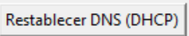

OneClickDNS - Manual de Usuario
OneClickDNS - Manual de Usuario
üìå Introducci√≥n
OneClickDNS es una herramienta para Windows que permite cambiar tus servidores DNS con un solo clic, mejorando tu seguridad y privacidad en internet.
Requisitos: Windows 10/11 (64-bit) con permisos de administrador.
üñ•Ô∏è Interfaz Principal

1. Selección de adaptador
Elige el adaptador de red (Wi-Fi/Ethernet) donde deseas cambiar los DNS.
2. Proveedores DNS preconfigurados
- AdGuard: Bloqueo de anuncios y malware
- CleanBrowsing: Filtro familiar
- OpenDNS: Protección básica
- Yandex: Protección familiar
- Neustar: Protección familiar
üõ†Ô∏è Funciones Clave
üîπ Aplicar DNS
- Selecciona un adaptador
- Elige un proveedor DNS
- Haz clic en "Aplicar DNS"
üîπ Restablecer a DHCP
Vuelve a la configuración automática de tu ISP:

⚙️ Registro de Actividad
La aplicación guarda un log con todos los cambios en:
%APPDATA%\OneClickDNS\dns_changes.log
Nota de seguridad: Los cambios requieren permisos de administrador porque modifican configuraciones de sistema.
❓ Preguntas Frecuentes
¿Por qué no aparecen los adaptadores?
Prueba:
- Ejecutar como administrador
- Usar el botón "Refrescar adaptadores"
¿Cómo verificar que los DNS cambiaron?
Abre Command Prompt y ejecuta:
nslookup google.com
üìû Soporte
Reporta problemas en:
github.com/gfrodriguez/OneClickDNS/issues